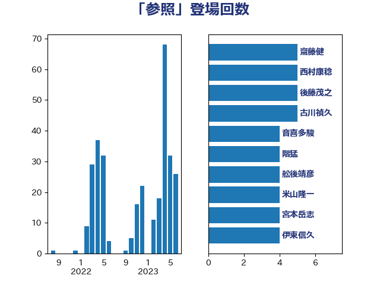

単語「参照」

| 齋藤健 | 自由民主党 | 5 回 |
| 西村康稔 | 自由民主党 | 5 回 |
| 後藤茂之 | 自由民主党 | 5 回 |
| 古川禎久 | 自由民主党 | 5 回 |
| 音喜多駿 | 日本維新の会 | 4 回 |
| 階猛 | 立憲民主党 | 4 回 |
| 舩後靖彦 | れいわ新選組 | 4 回 |
| 米山隆一 | 立憲民主党 | 4 回 |
| 宮本岳志 | 日本共産党 | 4 回 |
| 伊東信久 | 日本維新の会 | 4 回 |
| 仁比聡平 | 日本共産党 | 4 回 |
| 竹詰仁 | 国民民主党 | 3 回 |
| 河野太郎 | 自由民主党 | 3 回 |
| 永岡桂子 | 自由民主党 | 3 回 |
| 新藤義孝 | 自由民主党 | 3 回 |
| 宮崎政久 | 自由民主党 | 3 回 |
| 塚田一郎 | 自由民主党 | 3 回 |
| 北神圭朗 | 無所属 | 3 回 |
| 青柳仁士 | 日本維新の会 | 2 回 |
| 金子道仁 | 日本維新の会 | 2 回 |
| 藤井比早之 | 自由民主党 | 2 回 |
| 若松謙維 | 公明党 | 2 回 |
| 石井苗子 | 日本維新の会 | 2 回 |
| 渡辺博道 | 自由民主党 | 2 回 |
| 水野素子 | 立憲民主党 | 2 回 |
| 梅谷守 | 立憲民主党 | 2 回 |
| 根本匠 | 自由民主党 | 2 回 |
| 村田享子 | 立憲民主党 | 2 回 |
| 平林晃 | 公明党 | 2 回 |
| 平口洋 | 自由民主党 | 2 回 |
| 堀内詔子 | 自由民主党 | 2 回 |
| 吉田統彦 | 立憲民主党 | 2 回 |
| 伊佐進一 | 公明党 | 2 回 |
| 上野賢一郎 | 自由民主党 | 2 回 |
| 三浦信祐 | 公明党 | 2 回 |
| 鬼木誠 | 立憲民主党 | 1 回 |
| 高見康裕 | 自由民主党 | 1 回 |
| 高橋光男 | 公明党 | 1 回 |
| 長妻昭 | 立憲民主党 | 1 回 |
| 鈴木義弘 | 国民民主党 | 1 回 |
| 金子恭之 | 自由民主党 | 1 回 |
| 野田聖子 | 自由民主党 | 1 回 |
| 里見隆治 | 公明党 | 1 回 |
| 酒井庸行 | 自由民主党 | 1 回 |
| 輿水恵一 | 公明党 | 1 回 |
| 赤木正幸 | 日本維新の会 | 1 回 |
| 西銘恒三郎 | 自由民主党 | 1 回 |
| 藤原崇 | 自由民主党 | 1 回 |
| 若宮健嗣 | 自由民主党 | 1 回 |
| 芳賀道也 | 国民民主党 | 1 回 |
| 緑川貴士 | 立憲民主党 | 1 回 |
| 簗和生 | 自由民主党 | 1 回 |
| 竹内譲 | 公明党 | 1 回 |
| 秋野公造 | 公明党 | 1 回 |
| 石橋通宏 | 立憲民主党 | 1 回 |
| 石川大我 | 立憲民主党 | 1 回 |
| 石井準一 | 自由民主党 | 1 回 |
| 田村智子 | 日本共産党 | 1 回 |
| 田中昌史 | 自由民主党 | 1 回 |
| 田中健 | 国民民主党 | 1 回 |
| 猪瀬直樹 | 日本維新の会 | 1 回 |
| 牧山ひろえ | 立憲民主党 | 1 回 |
| 片山さつき | 自由民主党 | 1 回 |
| 浜野喜史 | 国民民主党 | 1 回 |
| 浜田聡 | NHK党 | 1 回 |
| 沢田良 | 日本維新の会 | 1 回 |
| 榛葉賀津也 | 国民民主党 | 1 回 |
| 森田俊和 | 立憲民主党 | 1 回 |
| 梅村聡 | 日本維新の会 | 1 回 |
| 本村伸子 | 日本共産党 | 1 回 |
| 本庄知史 | 立憲民主党 | 1 回 |
| 木村英子 | れいわ新選組 | 1 回 |
| 木村次郎 | 自由民主党 | 1 回 |
| 斉藤鉄夫 | 公明党 | 1 回 |
| 打越さく良 | 立憲民主党 | 1 回 |
| 平木大作 | 公明党 | 1 回 |
| 川田龍平 | 立憲民主党 | 1 回 |
| 岸田文雄 | 自由民主党 | 1 回 |
| 岬麻紀 | 日本維新の会 | 1 回 |
| 岡田直樹 | 自由民主党 | 1 回 |
| 岡本三成 | 公明党 | 1 回 |
| 山崎正恭 | 公明党 | 1 回 |
| 山口壯 | 自由民主党 | 1 回 |
| 山下芳生 | 日本共産党 | 1 回 |
| 尾身朝子 | 自由民主党 | 1 回 |
| 小西洋之 | 立憲民主党 | 1 回 |
| 小林鷹之 | 自由民主党 | 1 回 |
| 小宮山泰子 | 立憲民主党 | 1 回 |
| 小倉將信 | 自由民主党 | 1 回 |
| 安江伸夫 | 公明党 | 1 回 |
| 奥野総一郎 | 立憲民主党 | 1 回 |
| 天畠大輔 | れいわ新選組 | 1 回 |
| 大西英男 | 自由民主党 | 1 回 |
| 城井崇 | 立憲民主党 | 1 回 |
| 古賀篤 | 自由民主党 | 1 回 |
| 古屋範子 | 公明党 | 1 回 |
| 原口一博 | 立憲民主党 | 1 回 |
| 加藤勝信 | 自由民主党 | 1 回 |
| 佐々木さやか | 公明党 | 1 回 |
| 串田誠一 | 日本維新の会 | 1 回 |
| 中谷真一 | 自由民主党 | 1 回 |
| 中司宏 | 日本維新の会 | 1 回 |
| 下村博文 | 自由民主党 | 1 回 |
| 三ッ林裕巳 | 自由民主党 | 1 回 |
| こやり隆史 | 自由民主党 | 1 回 |